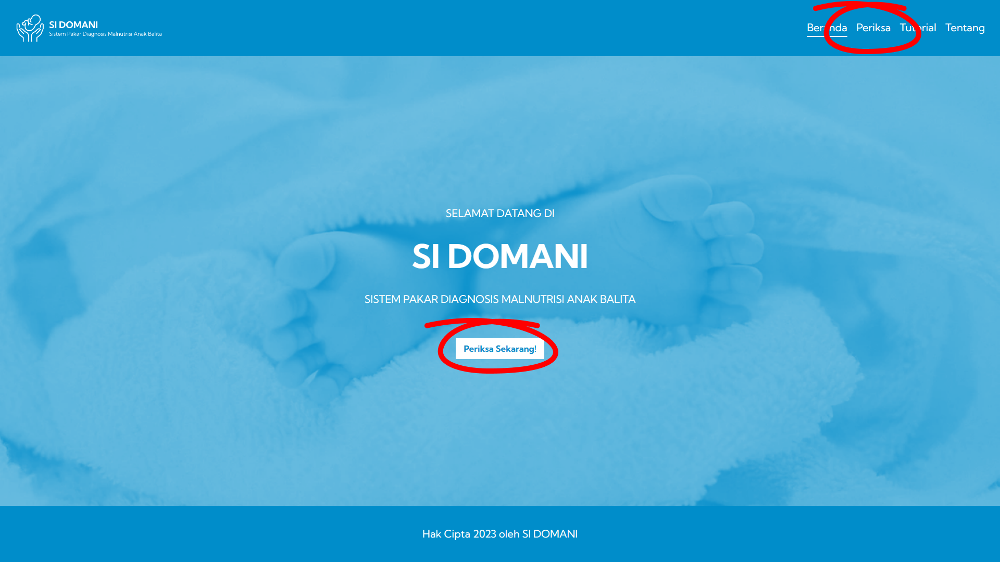
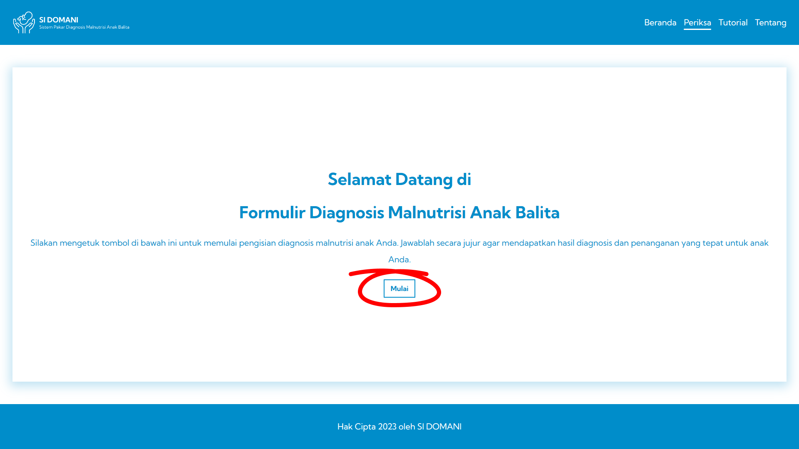
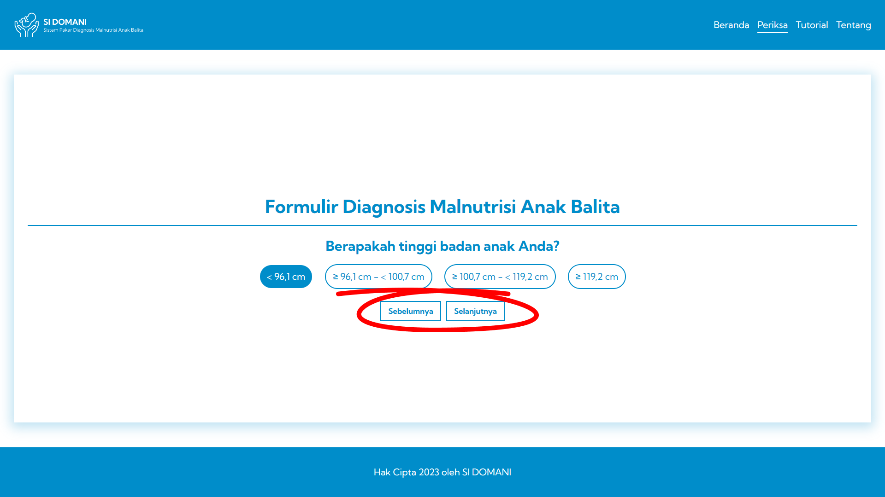
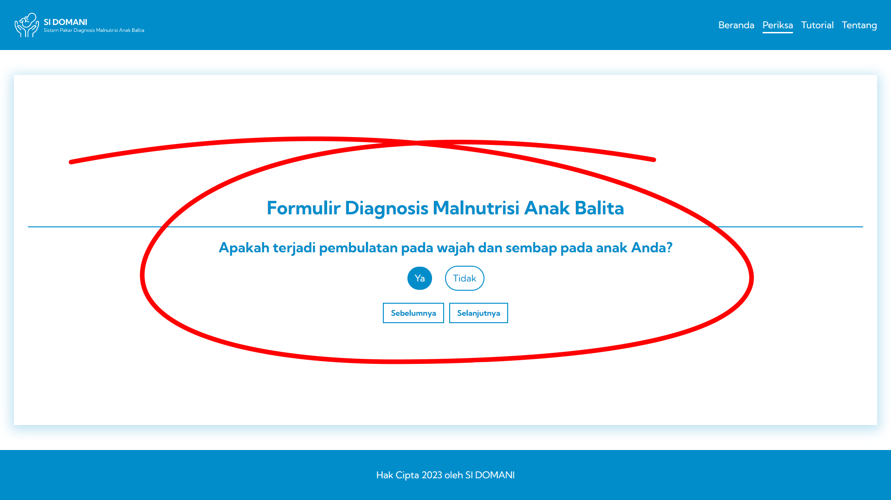
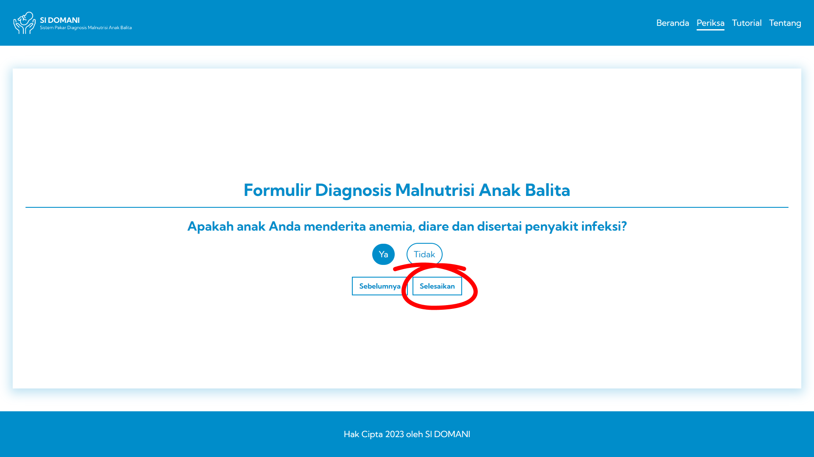
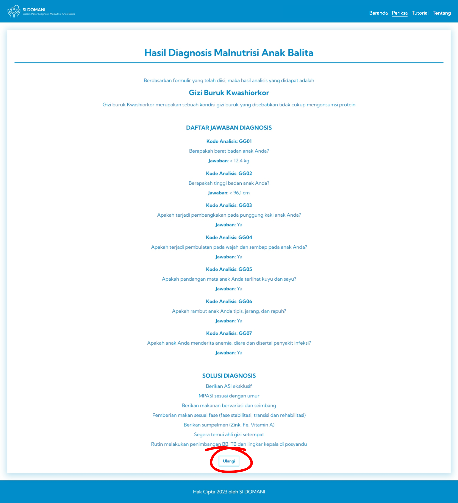

Berikut ini merupakan tutorial penggunaan SI DOMANI yang akan dijelaskan di dalam poin-poin berikut.
-
Kunjungi web SI DOMANI dan ketuk menu “Periksa".

-
Silahkan mengetuk tombol “Mulai” untuk mendapatkan formulir diagnosis.

-
Ketika telah mengisi formulir setiap pertanyaan, silahkan untuk mengetuk tombol “Selanjutnya”.
Apabila ingin kembali ke pertanyaan sebelumnya, silahkan untuk mengetuk tombol “Sebelumnya”.

-
Isi formulir sesuai dengan keadaan anak Anda agar mendapatkan hasil yang lebih tepat.

-
Ketika semua pertanyaan telah diisi, silahkan mengetuk tombol “Selesaikan”.

-
Hasil diagnosis akan dikeluarkan sesuai dengan pengisian formulir sebelumnya. Ketika ingin melakukan
analisis ulang, maka dapat mengetuk tombol “Ulangi”.
